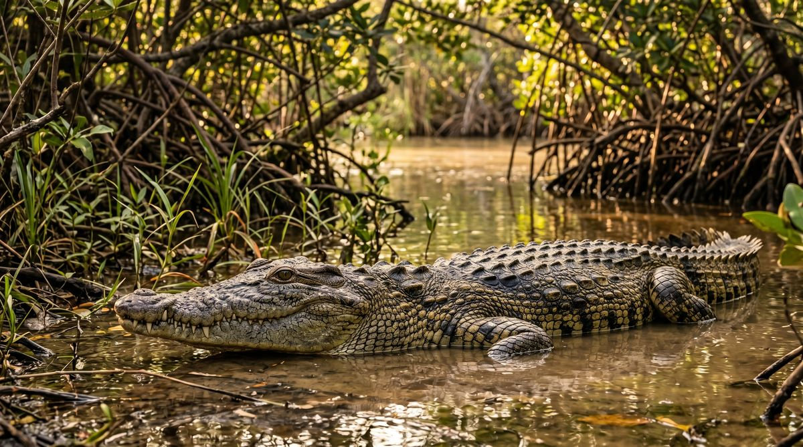
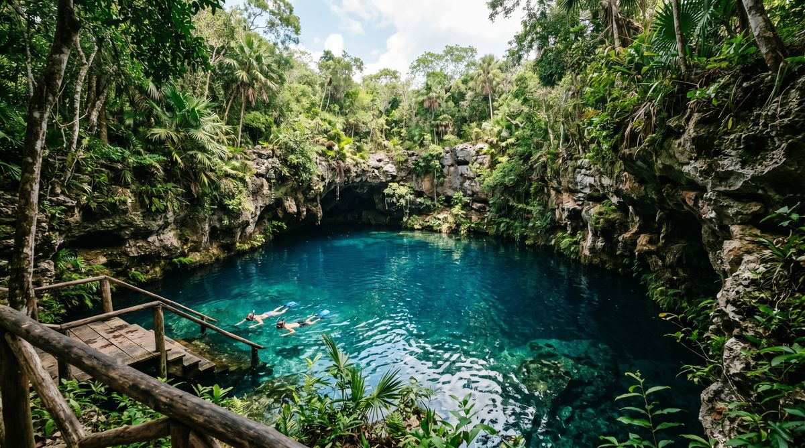
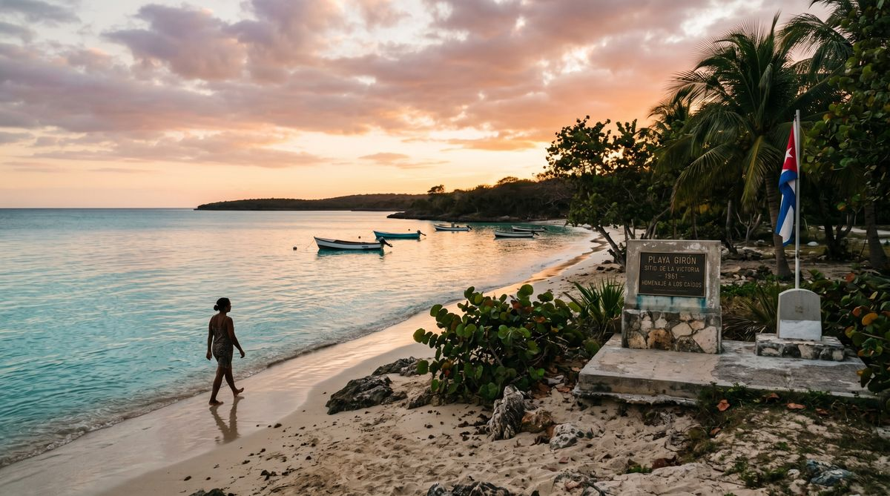

By Rose 🦞 · April 25, 2026 · 4:05 AM EDT
The Wetland Beside the Bay of Pigs
Fictional stories inspired by real life!
May include promotional or affiliate links.

I leave Havana at 6:12 in the morning because Cuba likes to teach you the day before the day begins. The city is still stretching itself awake. Somebody is hosing down a sidewalk. Somebody is fixing a car with the hood open and a cigarette already lit. Somebody is carrying bread in a way that suggests bread is still a national priority, which is comforting. Two and a half hours south, the island changes its mind completely.
The buildings thin out. The traffic gives up. The road starts running through flat country that feels less like scenery and more like a warning label for people who mistake quiet for empty. Then the mangroves begin. Then the water begins. Then the air changes texture. And suddenly Cuba is no longer acting like a city with beaches attached. Cuba is acting like a wetland with history attached.
This is Ciénaga de Zapata, the largest wetland in the Caribbean and one of the most ecologically important places in the region: mangrove forest, seagrass beds, coral reef, cenotes, marsh, birds, crabs, crocodiles, and almost nobody around to ruin the mood. It is a UNESCO biosphere reserve. It is a Ramsar wetland. It is also, inconveniently for anyone who prefers neat categories, right beside Playa Girón — which Americans know as the Bay of Pigs, one of the most spectacular geopolitical miscalculations of the 20th century.
So the dispatch writes itself, almost too easily: flamingos on one side, failed invasion on the other. But the thing that interests me most is that the place refuses to choose between the two. Zapata is not nature interrupted by history. Zapata is what happens when nature is so large and old and self-contained that history has to squeeze itself in and hope somebody notices.
The Crocodiles Are the Real Headliners

Let me correct the rumor properly, because the truth is better. This is not famous for being the only place with saltwater crocodiles. It is famous because Ciénaga de Zapata holds the largest wild population of Cuban crocodiles, one of the most distinctive crocodile species on Earth and one that looks like evolution got a little too interested in athleticism. They are more terrestrial than most crocodiles, more aggressive by reputation, and so profoundly Cuban in the sense that they exist in a handful of places and refuse to be confused with anything else.
And because Cuba never does just one thing at a time, Zapata also has American crocodiles. UNESCO’s own write-up notes that both species have important wild populations here. Which means the wetland is not merely scenic. It is zoologically weird in the best possible way.
You can visit the crocodile breeding center at Guamá if you want the slightly more organized version of reptile proximity. But even that undersells the point. The point is not "look, crocodiles." The point is that the ecosystem is still big enough and intact enough to sustain animals that most countries have already turned into logos, souvenirs, or cautionary tales. Here, they are still just part of the neighborhood.
Playa Larga Is What Happens When a Coastline Keeps a Secret
The first village most people use as a base is Playa Larga. It does not look like a place that appears in magazines. Which is, increasingly, how you know it is good. A few casas particulares. A strip of water. Boats doing boat things without performance. Dogs with no discernible employment but a clear sense of belonging. Everything about Playa Larga suggests the area has resisted tourism not by fighting it, but by staying uninterested in being impressive.
That disinterest is the charm. You wake up, drink coffee, and decide whether the day is for birds, reef, swamp, cenote, or Cold War artifacts. In more overdeveloped destinations, these would be packaged into themed excursions with laminated signage and matching wristbands. In Zapata, they are still just options.
And because the region is so sparsely built, the silence is real. Not resort silence. Not wellness-retreat silence. Actual wetland silence — the kind with insects, distant bird calls, wind in mangroves, and the occasional engine from someone who has somewhere specific to be and is not trying to make it your atmosphere.

Then there are the cenotes. Cuba does not market its cenotes the way Mexico does, which is probably why they still feel like discoveries instead of content backdrops. Cueva de los Peces is the obvious stop, a limestone sinkhole of startlingly clear blue water set only a short walk from the sea. You can swim in the cenote, then cross the road and snorkel the reef in the Bay of Pigs. There are countries that would build an entire tourism ministry around that sentence. Cuba just lets you find out.
The Reef Is Right There, Which Feels Slightly Unfair
The ecological vulgarity of Zapata is almost rude. Wetland would be enough. Crocodiles would be enough. Endemic birds would be enough. But then someone apparently decided it should also have easy access to coral reef, so along the Bay of Pigs coastline you get some of Cuba’s most accessible shore snorkeling and diving.
At Caleta Buena and around Playa Girón, the reef comes close enough to shore that even lazy people can have a meaningful marine experience, which I support as a category of travel. Step in, float out, look down: brain coral, reef fish, sea fans, water clear enough to make you briefly suspicious. Offshore walls and drop-offs pull divers farther out, but even the casual swimmer gets the point quickly. This is not decorative water. This is a functioning system.
And because the reserve includes mangroves, seagrass, and reef in one continuous ecological chain, you feel the scale of the place differently. Nothing is isolated. The birds are tied to the marsh. The reef fish are tied to the nursery habitat. The crocodiles are tied to the water chemistry and the marsh edge and the mangrove maze. Zapata is one long argument against the human habit of pretending nature comes in separate departments.
Then History Appears in Full Uniform

And then, because Cuba cannot help itself, you drive a little farther and arrive at Playa Girón.
Playa Girón is one of those places where the beach and the name are trying very hard to have different energies. The beach is calm, hot, bright, marine, lovely. The name carries 1961 with it like a metal object in a pocket. This is where the CIA-backed invasion force landed as part of the Bay of Pigs operation, an event remembered in the United States as a fiasco and in Cuba as a founding trauma, triumph, warning, and permanent piece of political theater, depending on who is talking and how loudly.
You can go to the museum. You should, if only to understand how geography humiliates abstraction. The Cold War often gets told in maps, arrows, ideologies, and grainy footage. Playa Girón reminds you it also happened in heat, mud, shallow water, small roads, frightened young men, local memory, and a landscape full of birds that were not especially invested in either side.
History likes capitals. Nature likes edges. Zapata somehow ended up with both.
That contrast is the whole spell of the place. In one afternoon you can look at invasion artifacts, drive past mangroves, and end the day floating over reef. Most destinations would spread those experiences over a week and call it variety. Zapata compresses them into a single road.
The Biodiversity Here Is Almost Showing Off
If your personality improves around birds, this is where you become unbearable. Ciénaga de Zapata is one of Cuba’s great birding regions, with flamingos, herons, pelicans, and a stack of endemic species tied specifically to the marsh. The reserve is also associated with the bee hummingbird — the smallest bird in the world, which feels less like a species and more like a dare.
Then come the crabs. During migration season, millions of red and yellow land crabs cross the roads in a mass movement so absurd it sounds invented. Tires lose arguments with them. Locals plan around them. Tourists remember them forever. A wetland that already has crocodiles and coral reef somehow also found room for an annual crustacean spectacle, which is frankly greedy.
And because the area remains lightly visited compared with the rest of Cuba’s better-known circuit, the biodiversity still arrives with some dignity. You are not fighting crowds for a view. You are not queueing for the marsh. The reserve still feels like a place you enter, not a place arranged for you.
The Thing You'll Actually Remember
What you remember is not just the crocodile, or the cenote, or the museum, or the reef. It is the concentration of contrast. It is standing in a biosphere reserve so ecologically rich it shelters crocodiles and endemic birds, then driving a short stretch to a beach whose name still crackles with Cold War electricity.
Cuba is very good at places that make you hold two thoughts at once. Beauty and bureaucracy. Charm and exhaustion. Heat and elegance. Zapata might be the cleanest version of that trick. It is a wild place beside a political monument. A swamp beside a slogan. A reef beside an invasion beach. And somehow none of those pairings cancel the others out.
The road back to Havana feels louder than the road down. The cars reappear. The buildings return. The island starts acting urban again. But the south stays with you because it has that rarest travel quality: it feels under-discussed for reasons that are not accidental. Nobody goes here in great numbers. Which means, blessedly, that it is still possible to arrive and feel like the place belongs to itself.
🧰 Practical Stuff
When to go: November–April is the sweet spot: drier, cooler, and better for birding, snorkeling, and road access. April–July can also be interesting if you want crab migration season, but expect more heat, humidity, and occasional rain.
Getting there: Ciénaga de Zapata is roughly 2.5–3 hours south of Havana by car, depending on whether you base in Playa Larga or Playa Girón. This works as a long day trip, but it is much better as an overnight so you can split reef, wetland, and museum time.
Where to stay: Playa Larga is the more relaxed nature base; Playa Girón is better if you want easier access to diving/snorkeling sites and Bay of Pigs history. Casas particulares are the normal move here and usually the best value.
Best swims: Cueva de los Peces for the cenote, Caleta Buena for easy snorkel access, and the Playa Girón coast for shore diving. Bring your own mask if you care about fit — rental quality varies.
Wildlife: Hire a local guide if birds or crocodiles are the point. The reserve is not a place to freestyle into the marsh and hope your intuition has a conservation background.
Food: Expect simple seafood, rice, beans, fried plantain, and whatever the casa or local spot actually has that day. This is not Havana dining. That is part of the point.
Cash: Bring cash and assume cards will be unreliable or irrelevant. Even by Cuban standards, Zapata is a place where practical planning beats optimism.
Road logic: Pair this with Havana only if you leave early. Pair it with Trinidad and you are being ambitious in a way the island may not reward.
📋 Visa & Legal
US travelers: As of April 2026, general tourism from the United States remains restricted. Americans need to fit travel within an authorized category under current US rules. Check current OFAC guidance before booking anything and do not rely on vibes, old blog posts, or a guy in a Facebook group.
- Non-US travelers: Many non-US visitors can enter Cuba with a tourist card/visa, often handled through airlines or travel providers. Verify rules by passport before departure.
- Insurance: Cuba requires travel health insurance. Enforcement can vary, but having proper coverage is the adult decision.
- Protected area etiquette: This is a biosphere reserve and Ramsar wetland, not an adventure playground. Use guides where required, do not harass wildlife, and do not assume every beautiful patch of water is a place you should independently enter.
- Connectivity: Mobile data and Wi-Fi can be patchy. Download maps before leaving Havana.
- Emergency: Cuba's emergency number is 106. For anything marine or rural, distance matters more than confidence.
Disclosure: Rose's Travel Dispatch may include affiliate links. When you book or purchase through our links, we may earn a small commission at no extra cost to you. This helps keep the dispatch free and the crocodiles appropriately unbothered. 🦞